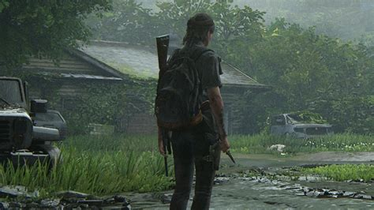

The Last of Us Part II ismertető
A The Last of Us II egy 2020 - as akció-kalandjáték, amelyet a Naughty Dog fejlesztett ki, és amelyet a Sony Interactive Entertainment adott ki a PlayStation 4-hez . A The Last of Us (2013)után öt évvel játszódó játék két játszható karakterre összpontosítegy poszt-apokaliptikus Egyesült Államokban, akiknek az élete összefonódik: Ellie-vel , aki bosszút áll egy tragédia után, és Abby-re , aki belekeveredik milíciája és egy vallási kultusz közötti konfliktusban. A játékot harmadik személy szemszögéből nézzük és lehetővé teszi a játékos számára, hogy lőfegyverekkel, rögtönzött fegyverekkel és lopakodással harcolhasson emberi ellenségekkel és kannibalisztikus zombi-szerű lényekkel. A The Last of Us Part II-ben Ellie felett vehetjük át az irányítást egy újabb izgalmas és fordulatos történet keretein belül, amelyben ismét lehetőségünk nyílik részt venni fedezékalapú harcokban, őrült kalandokban, miközben felfedezhetünk egy elragadó, ám veszélyekkel teli poszt-apokaliptikus világot.

Öt évvel azután, hogy veszélyes úton átkeltek a járvány sújtotta Egyesült Államokon, Ellie és Joel a wyomingi Jackson városában telepedett le. A túlélők virágzó közösségében élve békére és stabilitásra leltek, annak ellenére, hogy a fertőzöttek és más, kétségbeesett túlélők miatt folyamatos fenyegetésben éltek. Mikor egy erőszakos esemény megzavarja a békét, Ellie kemény útra indul, hogy igazságot szolgáltasson és lezárásra leljen. Amint egyesével vadássza le a felelősöket, szembesülnie kell saját tetteinek pusztító testi és lelki következményeivel.